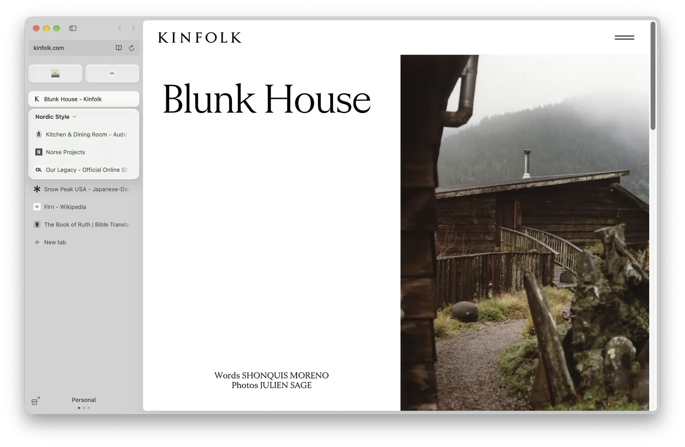
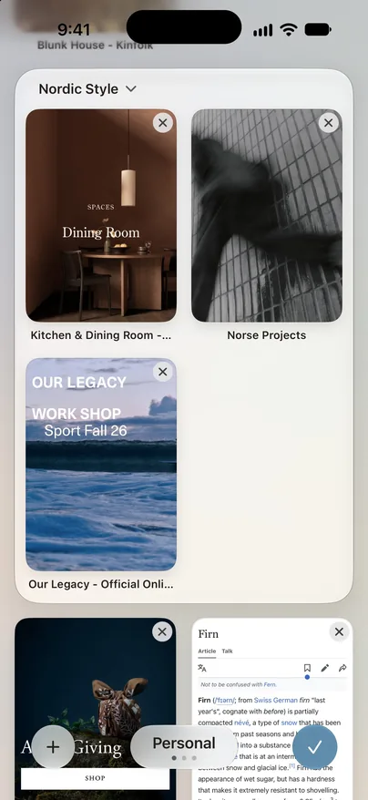
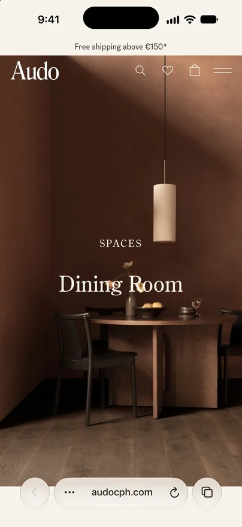
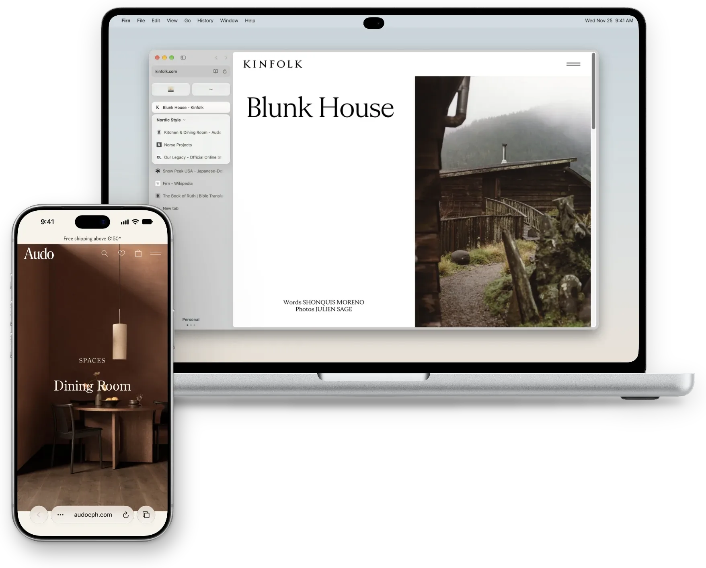
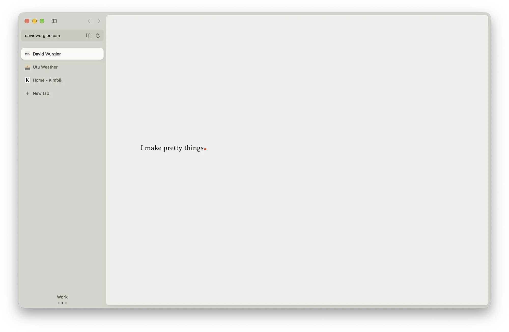
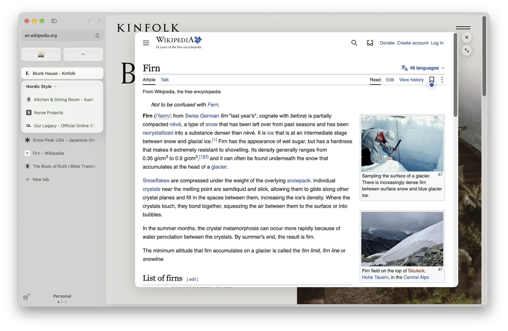
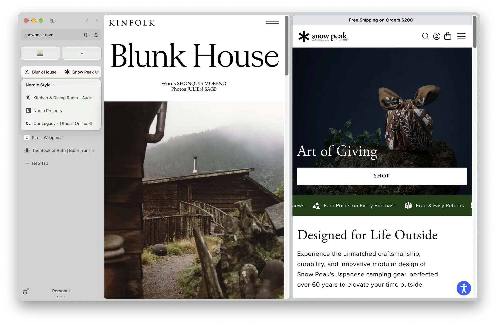
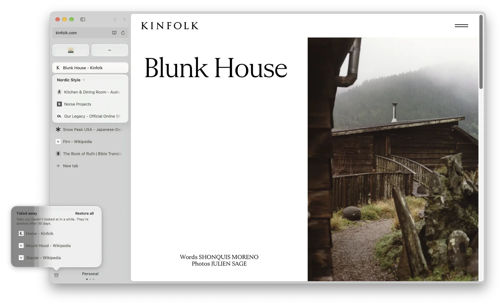

A calm browser for Mac, iPhone, and iPad.



Your spaces,
synced with iCloud.

Work and Personal,
kept apart.

A glance at a link
before you keep it.

Two pages,
side by side.

Old tabs,
tidied away.

Also on
iPhone and iPad.